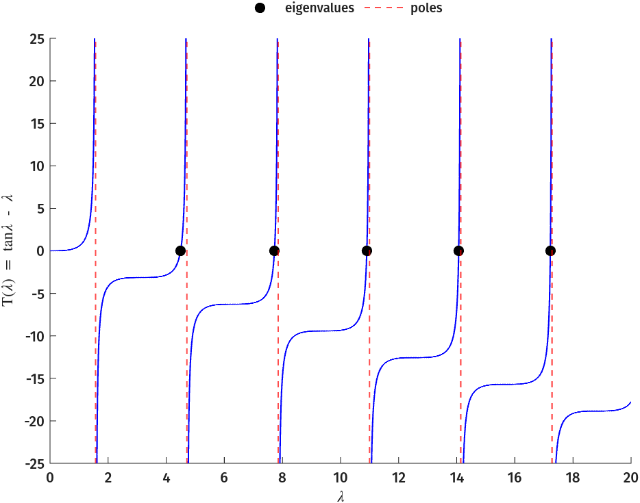
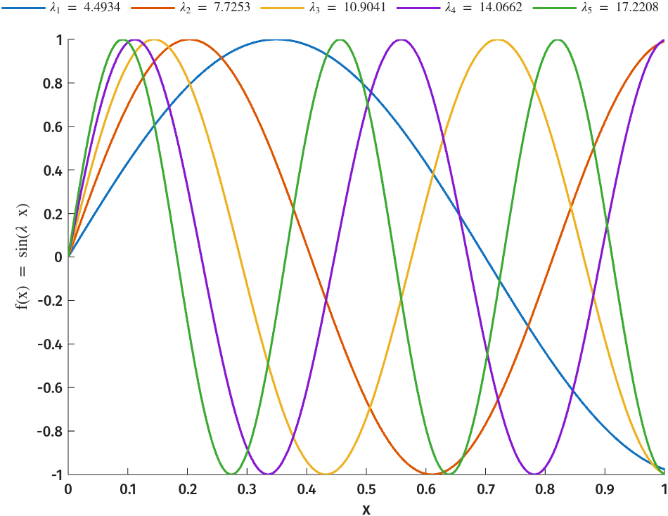
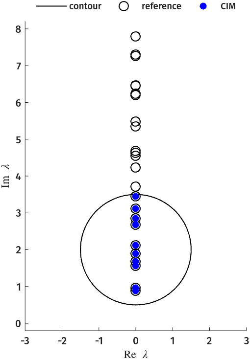
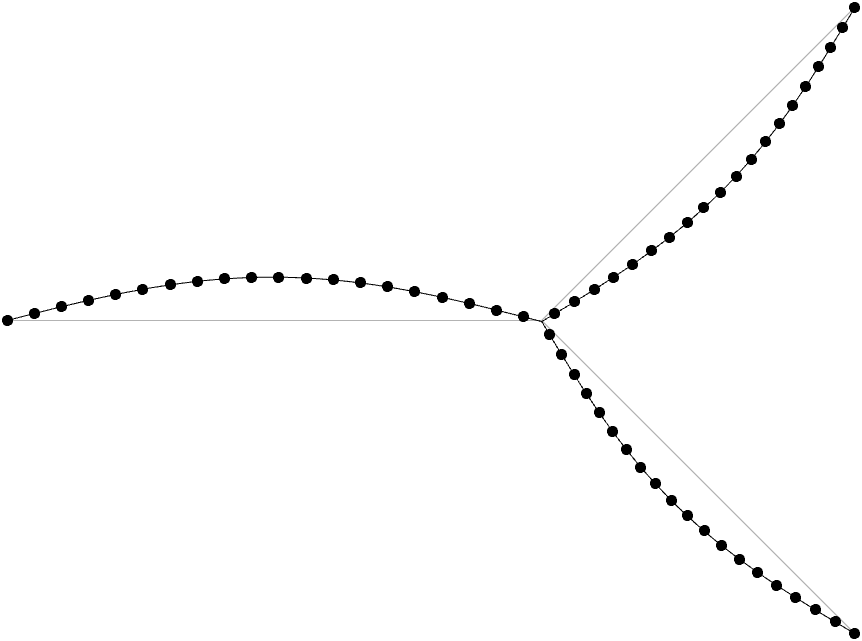
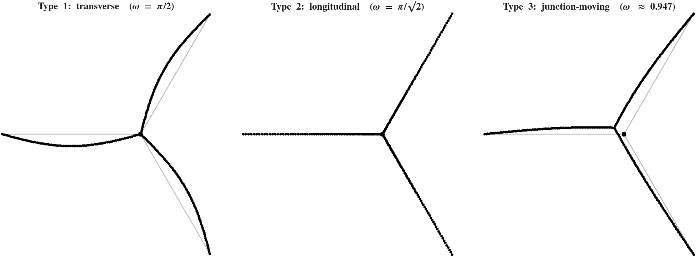
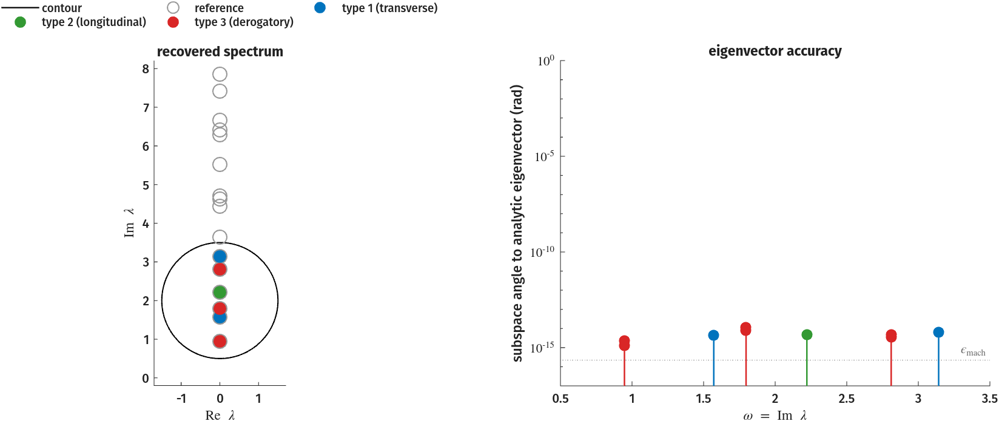
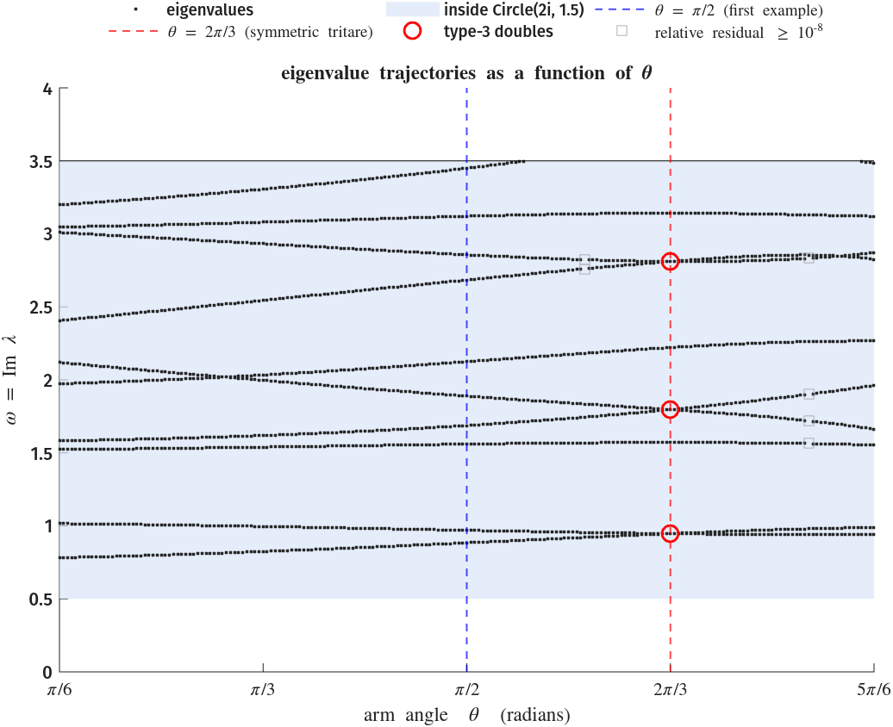
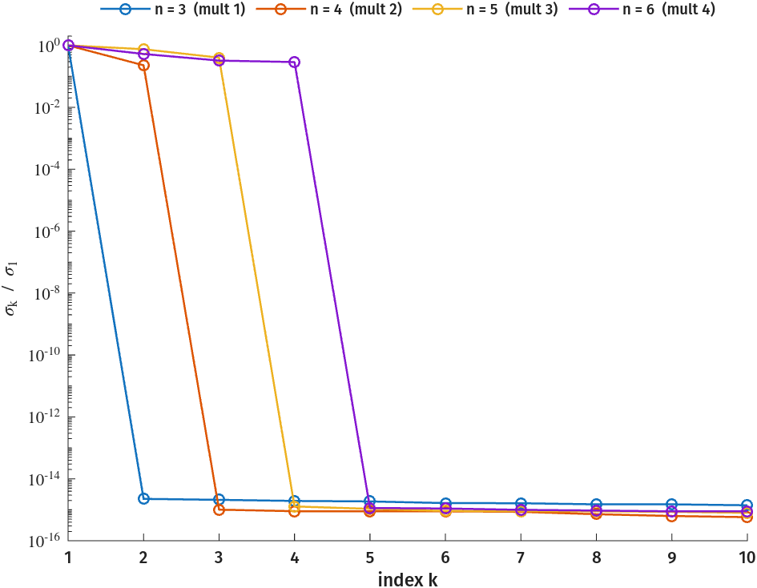
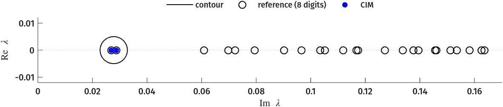
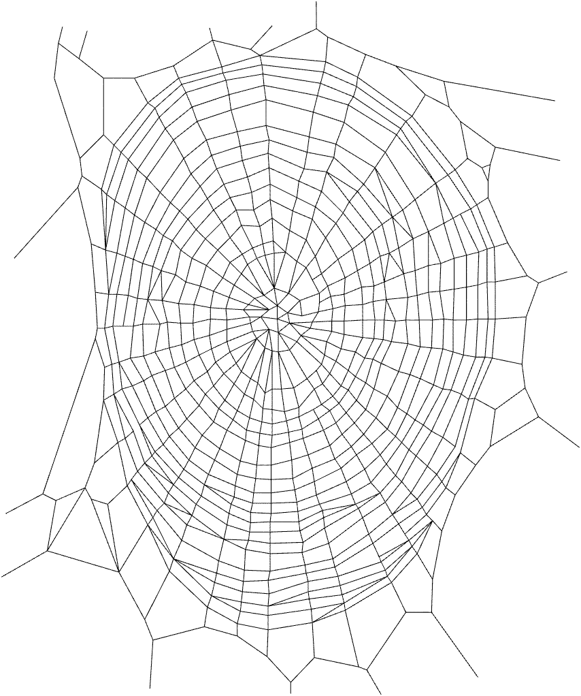

Going Beyond Polynomial Eigenvalue Problems
The runnable companion is given in src/demos/webs/tritare_web.m, whose cells mirror the sections of this page.
Every string network on this page comes from J. P. Baker's nlevp_webs package and dissertation2, and the nlevp_webs is required to be on the MATLAB path to run all examples on this page.
Motivation
In the acoustic-wave-1D example the operator was a matrix polynomial in \( \lambda \), obtained by discretising a 1-D Helmholtz equation. Discretisation captures low-frequency eigenmodes of the underlying infinite-dimensional problem well, but degrades for high-frequency modes. This suggests working with the infinite-dimensional problem directly, trading polynomial nonlinearities for more general, transcendental ones.
Plane Wave Solutions of the 1-D Wave Equation
Consider the 1-D wave equation
with boundary conditions
The ansatz \( u(x,t) = f(x) e^{i\lambda t} \), \( \lambda \in \mathbb{C} \), gives
Fixing \( c = 1 \), the function \( f(x) = \sin{( \lambda x )} \) satisfies the equation, and the right-hand boundary condition then requires
\( T(\lambda) = 0 \) is a scalar transcendental eigenvalue problem. Each root gives an exact eigenmode \( f(x) \) of the continuous problem.
Finding eigenvalues of \(T\)
| Eigenvalues/Poles of \(T\) | First 5 eigenmodes |
|---|---|
 |
 |
Plotting code (pzT.png, f5ms.png)
Continues from the eigenvalue sweep above (ew).
% T(lambda) with its eigenvalues (dots) and poles (dashed)
poles = (0.5:1:6.5)*pi; poles = poles(poles <= 20);
xg = linspace(0,20,4000); yg = tan(xg) - xg;
yg(abs(diff([yg yg(end)])) > 50) = NaN; % break the curve across poles
f = figure('Position',[100 100 700 525],'Color','w'); hold on
plot(xg, yg, 'b-', 'LineWidth', 1);
for p = poles; hP = xline(p, 'r--', 'LineWidth', 1); end
hZ = plot(ew, zeros(size(ew)), 'k.', 'MarkerSize', 22);
hold off; ylim([-25 25]); xlim([0 20]);
xlabel('\lambda'); ylabel('T(\lambda) = tan\lambda - \lambda');
legend([hZ hP], {'eigenvalues','poles'}, 'Location','northoutside', ...
'Orientation','horizontal', 'Box','off');
% the first five eigenmodes f(x) = sin(lambda x)
lam5 = ew(1:5); xf = linspace(0,1,400); lbl = strings(1,5);
f = figure('Position',[100 100 700 525],'Color','w'); hold on
for k = 1:5
plot(xf, sin(lam5(k)*xf), 'LineWidth', 1.5);
lbl(k) = sprintf('\\lambda_%d = %.4f', k, lam5(k));
end
hold off; ylim([-1 1]); xlim([0 1]);
xlabel('x'); ylabel('f(x) = sin(\lambda x)');
legend(lbl, 'Location','northoutside', 'Orientation','horizontal', 'Box','off');
A single string gives a scalar problem. The same construction on a network of strings produces matrix-valued transcendental problems, some of whose eigenvalues are available in closed form.
Networks of Strings
The nlevp_webs project2 assembles the planar modal vibrations of any network of elastic strings into an NLEVP. On each string's interior the wave equation is solved exactly by sines and cosines, and the eigenvalue enters only through the boundary and junction conditions. The construction converts a linear, infinite-dimensional problem into a nonlinear, finite-dimensional one3.
On string \( i \), component \( j \) of the modal displacement is a standing wave with sine coefficient \( A_{i,j} \) and cosine coefficient \( B_{i,j} \), where \( j = 1 \) is the longitudinal direction and \( j \ge 2 \) are transverse. The coefficients are constrained by the fixed-frame condition at anchored ends, and by continuity and force balance at each free node. The full construction goes into more detail2. Note that eigenvalues with relative residual \( \lVert T(\lambda)\mathbf{v} \rVert_2 / \lVert T(\lambda) \rVert_F \geq 10^{-8} \) are marked with empty grey boxes in the figures below.
The Three-String ("Tritare")
The tritare1 is the simplest interesting case: three strings meeting at a single free junction and anchored to the frame at their outer ends (\( n_e = 3 \)), vibrating in the plane (\( D = 2 \)).
tritare.m gives reference eigenvalues computed to 30 digits for two arm angles \( \theta \in \{\pi/2,\, 2\pi/3\} \).
\( \theta \) is the angle between two of the string arms, with the third string, lying opposite the arm bisector.
We consider \( \theta = \pi/2 \) first, with all eigenvalues purely imaginary (\( \lambda = i\omega \), no damping).
On a circle enclosing the ten lowest-frequency eigenvalues, CIM determines the enclosed count from the numerical rank of the Loewner data matrix.
It returns all 10 eigenvalues to machine precision (see src/demos/webs/tritare_web.m).
Code
[T, TV, gamma, nodes, edges, ew_ref] = tritare(pi/2); % 12x12, references to 30 digits
op = Numerics.OperatorData(T);
c = Numerics.Contour.Circle(2i, 1.5, 512);
cim = Numerics.CIM(op, c);
cim.SampleData.ell = 12; cim.SampleData.r = 12;
cim.setComputationalMode(Numerics.ComputationalMode.MPLoewner, Numerics.RealizationSize(0, 64));
cim.RealizationData.AutoRank = true; % m at the largest gap in the singular values of the Loewner matrix
[V, Lam] = cim.eigs(); ew = diag(Lam);
in = c.inside(ew); ew = ew(in); V = V(:,in);
res = Numerics.relres(T, ew, V, op.sample_mode);
ok = res < 1e-8; % trusted eigenpairs
fprintf('%d enclosed / %d recovered, %d trusted (rank %d), matching distance %.1e, max relres %.1e\n', ...
nnz(c.inside(ew_ref)), numel(ew), nnz(ok), cim.ResultData.m, Numerics.matching_distance(ew_ref, ew), max(res));
The eigenvector \( \mathbf{v} \) holds the coefficients \( A_{i,j}, B_{i,j} \) of the mode shape, so it can be plotted directly as a vibrating Y:
| Recovered vs 30-digit reference | Mode shape from the CIM eigenvector (\( \omega_3 \approx 1.55994 \)) |
|---|---|
 |
 |
The right panel reconstructs the third mode from its CIM eigenvector via the nlevp_webs mode_curves (grey: strings at rest; black: the displaced web).
Plotting code (tritare_eigs.png, tritare_mode.png)
Continues from the block above (c, ew, V, ok, ew_ref, and the geometry TV, gamma, nodes, edges).
% trusted eigenvalues (dots), untrusted ones (grey squares), 30-digit references (circles) and the contour
f = figure('Position',[100 100 700 525],'Color','w'); hold on
h = [plot([c.z c.z(1)], 'k-', 'LineWidth', 1), ...
plot(real(ew_ref), imag(ew_ref), 'ko', 'MarkerSize', 9, 'LineWidth', 1), ...
plot(real(ew(ok)), imag(ew(ok)), 'b.', 'MarkerSize', 20)];
lbl = {'contour','reference','CIM'};
if any(~ok)
h(end+1) = plot(real(ew(~ok)), imag(ew(~ok)), 's', 'MarkerEdgeColor', [0.6 0.6 0.6], 'MarkerFaceColor', 'none', 'MarkerSize', 7);
lbl{end+1} = 'relative residual \geq 10^{-8}';
end
hold off; axis equal; xlim([-3 3]); ylim([-0.2 8.2]);
xlabel('Re \lambda'); ylabel('Im \lambda');
legend(h, lbl, 'Location','northoutside', 'Orientation','horizontal', 'Box','off');
% the mode shape of the third eigenpair (omega_3 = 1.55994) via mode_curves
v = V(:,3); [~, ip] = max(abs(v)); v = real(v / exp(1i*angle(v(ip)))); % rotate to a real vector
R = real(mode_curves(ew(3), v, TV, gamma, nodes, edges, 1, 0, 0.3, 60));
f = figure('Position',[100 100 700 525],'Color','w'); hold on
plot([nodes(edges(:,1),1)' ; nodes(edges(:,2),1)'], ...
[nodes(edges(:,1),2)' ; nodes(edges(:,2),2)'], '-', 'Color', [0.7 0.7 0.7]);
for i = 1:size(R,3)
plot(R(1,:,i), R(2,:,i), 'k.-', 'MarkerSize', 16, 'MarkerIndices', 1:3:60);
end
hold off; axis off; axis equal;
Classifying Eigenvalue Types on the Symmetric Tritare
At \( \theta = 2\pi/3 \) the tritare becomes a symmetric three-armed star. Symmetry makes the whole spectrum solvable in closed form, which gives an exact reference for what CIMTOLL reads off of a contour. The assembled operator \( T(\lambda) \) is \( 2Dn_e \times 2Dn_e = 12\times12 \), one column per coefficient \( A_{i,j}, B_{i,j} \)2. Every string is anchored to the frame at one end, so \( B_{i,j} = 0 \) for all \( i, j \); what remains is an order-6 problem in the sine coefficients. It is written for real \( \omega \), with \( \lambda = i\omega \), and denoted \( \widehat T \) to separate it from the \( 12\times12 \) operator:
The top four rows are the continuity conditions at the junction, and the bottom two are the force-balance condition.
The longitudinal and transverse phases across a string are \( \sqrt2\,\omega \) and \( 2\omega \).
general_web assembles the same conditions up to row scaling and the orientation of each string's local axes, so the eigenvalues agree.
The eigenvalues fall into three types3, which follow from examining how the four continuity rows can vanish.
| Type | Condition | Frequencies |
|---|---|---|
| 1 (transverse) | \( \sin 2\omega = 0 \) | \( \omega = m\pi/2 \) |
| 2 (longitudinal) | \( \sin\sqrt2\,\omega = 0 \) | \( \omega = m\pi/\sqrt2 \) |
| 3 (junction-moving) | \( \tan\sqrt2\,\omega + \sqrt2\tan 2\omega = 0 \) | transcendental |
The figure below shows one mode shape per type: the junction fixed with arms bowing (type 1), the junction fixed with longitudinal compression visible in the dot spacing (type 2), and the whole web swinging about a displaced junction (type 3).

Plotting code (tritare_types.png)
Recovers one trusted representative of each family and reconstructs its mode shape with mode_curves.
% one trusted eigenvector of each type, each from a small circle around its frequency
[T, TV, gamma, nodes, edges, ew_ref] = tritare(2*pi/3);
wl = [pi/2, pi/sqrt(2), imag(ew_ref(1))]; % type 1, 2, 3 representatives
opt = Numerics.OperatorData(T);
ct = Numerics.Contour.Circle(1i*wl(1), 0.08, 256);
cimt = Numerics.CIM(opt, ct);
cimt.SampleData.ell = 8; cimt.SampleData.r = 8;
cimt.setComputationalMode(Numerics.ComputationalMode.MPLoewner, Numerics.RealizationSize(0, 64));
cimt.RealizationData.AutoRank = true;
modeV = cell(1,3);
for t = 1:3
ct.gamma = 1i*wl(t); % the shifts follow the circle, the probes stay
[V, Lam] = cimt.eigs(); z = diag(Lam);
ok = ct.inside(z) & Numerics.relres(T, z, V, opt.sample_mode) < 1e-8;
v = V(:, find(ok, 1));
[~, ip] = max(abs(v)); modeV{t} = real(v / exp(1i*angle(v(ip))));
end
ttl = {'Type 1: transverse (\omega = \pi/2)', ...
'Type 2: longitudinal (\omega = \pi/\surd2)', ...
'Type 3: junction-moving (\omega \approx 0.947)'};
scl = [0.30 0.60 0.30]; % longitudinal needs a larger scale to read
f = figure('Position',[100 100 1200 420],'Color','w');
tiledlayout(1,3,'Padding','compact','TileSpacing','compact');
for t = 1:3
nexttile; hold on
R = real(mode_curves(1i*wl(t), modeV{t}, TV, gamma, nodes, edges, 1, 0, scl(t), 80));
plot([nodes(edges(:,1),1)' ; nodes(edges(:,2),1)'], ...
[nodes(edges(:,1),2)' ; nodes(edges(:,2),2)'], '-', 'Color', [0.72 0.72 0.72], 'LineWidth', 1);
for i = 1:size(R,3)
plot(R(1,:,i), R(2,:,i), 'k.-', 'MarkerSize', 9, 'LineWidth', 1);
end
plot(0, 0, 'ko', 'MarkerSize', 5, 'MarkerFaceColor', 'k'); % the junction
hold off; axis equal; axis off; title(ttl{t});
end
For type 1 eigenvalues the tritare rings as three individual strings clamped at each end (the endpoints and the shared junction). The longitudinal coefficients \( A_{i,1} \) vanish and the eigenvector is a multiple of \( [0,1,0,1,0,-1]^\top \). Type 2 forces \( A_{i,2} = 0 \), and the eigenvector is a multiple of \( [1,0,1,0,1,0]^\top \). For type 3 the junction moves, and the eigenspace is two-dimensional:
Of the 24 reference eigenvalues, 5 are of type 1, 3 of type 2, and 16 of type 3 (eight distinct values, each a derogatory double).
Realizing Eigenpairs
The derogatory doubles, linearly dependent eigenvectors of the type-1 and type-2 families, and closed-form reference make the symmetric three-string a great validation problem for CIM solvers3. The contour of the \( \theta = \pi/2 \) example, \( \texttt{Circle(2i, 1.5)} \), is reused on the \( \theta = 2\pi/3 \) operator. It encloses nine eigenvalues counted with multiplicity, six of them the three type-3 doubles. The count is one lower than at \( \theta = \pi/2 \) because one eigenvalue leaves the circle at \( \theta \approx 1.72 \).

The left panel colours each recovered eigenvalue by family, while the right panel shows the principal subspace angle between each recovered eigenvector and the analytic eigenspace.
Code (eigenvalue and eigenvector accuracy)
Continues from the \( \theta = \pi/2 \) block above, whose CIM (op, c, cim) is reused.
% the theta = pi/2 CIM, with its contour and probes, on the symmetric operator
[T, ~, ~, ~, ~, ew_ref] = tritare(2*pi/3);
op.T = T;
[V, Lam] = cim.eigs(); ew = diag(Lam);
in = c.inside(ew); ew = ew(in); V = V(:,in);
ok = Numerics.relres(T, ew, V, op.sample_mode) < 1e-8; % trusted eigenpairs
% eigenvalue error, and subspace angle to the analytic eigenspace at the nearest reference
ang = zeros(numel(ew),1); eer = zeros(numel(ew),1); jref = zeros(numel(ew),1);
for i = 1:numel(ew)
[eer(i), jref(i)] = min(abs(ew(i) - ew_ref));
ang(i) = subspace(V(:,i), null(T(ew_ref(jref(i)))));
end
fprintf('Loewner rank %d, %d eigenvalues, %d trusted; max eigenvalue error %.1e, max eigenvector angle %.1e\n', ...
cim.ResultData.m, numel(ew), nnz(ok), max(eer), max(ang));
% each double: the recovered pair must span the two-dimensional null space, not just lie in it
for j = unique(jref).'
pr = find(jref == j);
if numel(pr) == 2
N = null(T(ew_ref(j)));
fprintf('double at %.6fi: pair rank %d, angle between recovered and analytic 2-spaces %.1e\n', ...
imag(ew_ref(j)), rank(V(:,pr), 1e-8), subspace(V(:,pr), N));
end
end
Plotting code (tritare_recovery.png)
Continues from the block above (c, ew, ew_ref, ang, ok); colours each eigenvalue by its family.
cls = zeros(numel(ew),1); % the type of each recovered eigenvalue
for i = 1:numel(ew)
ww = imag(ew(i));
if abs(sin(2*ww)) < 1e-4, cls(i)=1; elseif abs(sin(sqrt(2)*ww)) < 1e-4, cls(i)=2; else cls(i)=3; end
end
cls(~ok) = 4; % untrusted, whatever its type
col = [0.00 0.45 0.74; 0.20 0.60 0.20; 0.85 0.15 0.15; 0.6 0.6 0.6];
mk = {'.', '.', '.', 's'}; msl = [30 30 30 7]; msr = [26 26 26 7]; % marker sizes, left and right panel
tn = {'type 1 (transverse)','type 2 (longitudinal)','type 3 (derogatory)','relative residual \geq 10^{-8}'};
f = figure('Position',[100 100 1180 470],'Color','w');
tiledlayout(1,2,'Padding','compact','TileSpacing','loose');
nexttile; hold on % left: recovered spectrum by type
hC = plot([c.z c.z(1)], 'k-', 'LineWidth', 1);
hR = plot(real(ew_ref), imag(ew_ref), 'o', 'Color',[0.6 0.6 0.6], 'MarkerSize',11, 'LineWidth',1);
h = NaN(1,4);
for i = 1:numel(ew)
h(cls(i)) = plot(real(ew(i)), imag(ew(i)), mk{cls(i)}, 'MarkerEdgeColor', col(cls(i),:), 'MarkerFaceColor', 'none', 'MarkerSize', msl(cls(i)));
end
hold off; axis equal; xlim([-1.7 1.7]); ylim([-0.2 8.2]);
xlabel('Re \lambda'); ylabel('Im \lambda'); title('recovered spectrum');
lg = [hC hR]; lgs = {'contour','reference'};
for k = 1:4, if ~isnan(h(k)), lg=[lg h(k)]; lgs=[lgs tn(k)]; end, end
legend(lg, lgs, 'Location','northoutside', 'Orientation','horizontal', 'Box','off', 'NumColumns',3);
nexttile; hold on % right: eigenvector subspace angle
for i = 1:numel(ew)
stem(imag(ew(i)), max(ang(i),1e-17), 'Color', col(cls(i),:), 'Marker','none', 'LineWidth',1.2);
plot(imag(ew(i)), max(ang(i),1e-17), mk{cls(i)}, 'MarkerEdgeColor', col(cls(i),:), 'MarkerFaceColor', 'none', 'MarkerSize', msr(cls(i)));
end
yline(eps, 'k:', '\epsilon_{mach}', 'Color',[0.4 0.4 0.4]);
hold off; set(gca,'YScale','log'); ylim([1e-17 1e0]); xlim([0.5 3.5]);
xlabel('\omega = Im \lambda'); ylabel('subspace angle to analytic eigenvector (rad)');
title('eigenvector accuracy');
\( \theta \) as a parameter
tritare(θ) assembles \( T(\lambda;\theta) \) for any \( \theta \in (0,\pi) \), so the \( \theta = \pi/2 \) and \( \theta = 2\pi/3 \) problems above are two slices of a single parametric NLEVP2.
The figure traces the eigenvalues within the same circle as the previous section as \( \theta \) sweeps \( [\pi/6, 5\pi/6] \):

At \( \theta = 2\pi/3 \) the type-3 frequencies are doubles (circled), where eigenvalues cross. Changing the angle away from \( 2 \pi / 3 \) breaks the symmetry and splits each double into two simple eigenvalues; type-1 and type-2 frequencies stay simple.
Code (eigenvalue trajectories vs \( \theta \))
Continues from the blocks above, reusing the \( \theta = \pi/2 \) CIM at every arm angle.
% the theta = pi/2 CIM on Circle(2i, 1.5), at every arm angle
th = linspace(pi/6, 5*pi/6, 201);
loci = cell(size(th)); rr = cell(size(th)); % the frequencies inside, and their relative residuals
for k = 1:numel(th)
op.T = tritare(th(k));
[V, Lam] = cim.eigs(); z = diag(Lam); in = c.inside(z);
loci{k} = imag(z(in));
rr{k} = Numerics.relres(op.T, z(in), V(:,in), op.sample_mode);
end
ok = vertcat(rr{:}) < 1e-8; % trusted eigenpairs
fprintf('theta sweep: %d eigenvalues inside at %d angles, %d trusted, %d untrusted (max relres %.1e)\n', ...
numel(ok), numel(th), nnz(ok), nnz(~ok), max(vertcat(rr{:})));
Plotting code (tritare_loci.png)
Continues from the loop above (c, th, loci, ok); shades the enclosed band and marks the two example slices.
[~, k3] = min(abs(th - 2*pi/3));
d3 = loci{k3}(diff(loci{k3}) < 1e-6); % the type-3 doubles at theta = 2*pi/3
TH = repelem(th, cellfun(@numel, loci)); OM = vertcat(loci{:});
band = imag(c.gamma) + [-1 1]*c.rho; % the frequencies inside the circle
f = figure('Position',[100 100 780 600],'Color','w'); hold on
hB = patch([pi/6 5*pi/6 5*pi/6 pi/6], band([1 1 2 2]), [0.85 0.90 0.97], 'EdgeColor','none', 'FaceAlpha',0.7);
h = [plot(TH(ok), OM(ok), '.', 'Color',[0.15 0.15 0.15], 'MarkerSize', 5), hB, ...
xline(pi/2, 'b--', 'LineWidth', 1), ...
xline(2*pi/3, 'r--', 'LineWidth', 1), ...
plot(2*pi/3*ones(size(d3)), d3, 'ro', 'MarkerSize', 9, 'LineWidth', 1.4)];
lbl = {'eigenvalues', 'inside Circle(2i, 1.5)', ...
'\theta = \pi/2 (first example)', '\theta = 2\pi/3 (symmetric tritare)', 'type-3 doubles'};
if any(~ok)
h(end+1) = plot(TH(~ok), OM(~ok), 's', 'MarkerEdgeColor', [0.6 0.6 0.6], 'MarkerFaceColor', 'none', 'MarkerSize', 7);
lbl{end+1} = 'relative residual \geq 10^{-8}';
end
plot([pi/6 5*pi/6], band([2 2]), 'k-', 'LineWidth', 0.5);
hold off; xlim([pi/6 5*pi/6]); ylim([0 4]);
xticks((1:5)*pi/6); xticklabels({'\pi/6','\pi/3','\pi/2','2\pi/3','5\pi/6'});
xlabel('arm angle \theta (radians)'); ylabel('\omega = Im \lambda');
title('eigenvalue trajectories as a function of \theta');
legend(h, lbl, 'Location','northoutside', 'Orientation','horizontal', 'Box','off', 'NumColumns',3);
The \(n\)-string and Loewner Probing
The eigenvalue types generalize as \(n\) is varied.
general_web builds the \( n \)-armed star directly, with unit tensions balanced at the junction for any \( n \).
Each of the \( n \) arms carries an independent transverse clamped-string mode at \( \omega = \pi/2 \), and force balance at the junction removes two of the \( n \) arm amplitudes.
Thus, the type-1 eigenvalue at \( i\pi/2 \) has multiplicity \( n - 2 \)3.
Code
% the n-armed star: n strings of length 2 from a junction at the origin, 4n x 4n
phi = @(n) 2*pi*(0:n-1)'/n;
star = @(n) general_web([0 0; 2*cos(phi(n)) 2*sin(phi(n))], [(2:n+1)' ones(n,1)], 1, 1, 2, 0);
op = Numerics.OperatorData(star(3));
c = Numerics.Contour.Circle(1i*pi/2, 0.1, 256);
cim = Numerics.CIM(op, c);
cim.SampleData.ell = 8; cim.SampleData.r = 8;
cim.setComputationalMode(Numerics.ComputationalMode.MPLoewner, Numerics.RealizationSize(0, 64));
cim.RealizationData.AutoRank = true;
svals = cell(1,6); % the Loewner singular values, for the plot
for n = 3:6
op.T = star(n); % a new size draws new probes
[V, Lam] = cim.eigs(); ew = diag(Lam);
in = c.inside(ew); ew = ew(in); V = V(:,in);
svals{n} = diag(cim.ResultData.Sigma) / cim.ResultData.Sigma(1);
res = Numerics.relres(op.T, ew, V, op.sample_mode);
fprintf('n=%d (T is %2dx%2d): rank %d = n-2, %d trusted, dist to i*pi/2 %.1e, max relres %.1e\n', ...
n, 4*n, 4*n, cim.ResultData.m, nnz(res < 1e-8), max(abs(ew - 1i*pi/2)), max(res));
end

Plotting code (nstar_mult.png)
Continues from the loop above (svals).
f = figure('Position',[100 100 700 525],'Color','w'); hold on
lbl = strings(1,4);
for n = 3:6
kk = 1:min(10, numel(svals{n}));
semilogy(kk, svals{n}(kk), 'o-', 'LineWidth', 1.2, 'MarkerSize', 6);
lbl(n-2) = sprintf('n = %d (mult %d)', n, n-2);
end
hold off; set(gca,'YScale','log'); ylim([1e-16 2]); xlim([1 10]);
xlabel('index k'); ylabel('\sigma_k / \sigma_1');
legend(lbl, 'Location','northoutside', 'Orientation','horizontal', 'Box','off');
The number of probing directions bounds the recoverable multiplicity
The one-sided samples \( \mathbf{L}^*\mathbf{T}(z)^{-1} \) and \( \mathbf{T}(z)^{-1}\mathbf{R} \) can expose an eigenspace of dimension at most \( \min(\ell, r) \). Rerunning the \( n = 6 \) star with \( \ell = r = 2 \) undercounts the multiplicity-4 eigenvalue:
% the n = 6 star of the loop above, realized from two of its probes per side
cim.SampleData.ell = 2; cim.SampleData.r = 2;
cim.compute();
fprintf('n=6 with ell = r = 2: Loewner rank %d (true multiplicity 4)\n', cim.ResultData.m);
The realized eigenvalue undercounts the true multiplicity, and the Loewner singular values do not indicate this. When multiple eigenvalues are possible, \( \ell \) and \( r \) should be at least as large as the maximum multiplicity to be resolved. §4.2.2 of 2 bounds the number of moments needed for a full-rank realization through the Cayley–Hamilton theorem and the degree of the minimal polynomial. Its Theorem 4.2 caps the rank gained per moment within a left-invariant subspace at the rank of the probing directions restricted to it.
A Large-Scale Orb-Weaver's Web
The runnable companion is at src/demos/webs/orb_web.m.
nlevp_webs' spider2 is a traced orb-weaver web with 633 nodes and 1241 string edges, whose planar modal vibrations give a \( 4964 \times 4964 \) trigonometric NEP.
general_web assembles \( T(\lambda) \) densely, but the operator is sparse (0.16 % dense).
CIMTOOL can take advantage of this by using sparse solves at each quadrature point, saving a substantial amount of memory (a dense \( n \times n \times K \) sample array at \( K = 48 \) would be \(\approx\)19 GB).
Code
[Td, TV, gam, nodes, edges, ew_ref] = spider2();
T = @(s) sparse(Td(s)); % assembled dense, but string-local: sample it sparse
op = Numerics.OperatorData(T);
c = Numerics.Contour.Circle(0.0278i, 0.005, 128); % encloses the two lowest modes
cim = Numerics.CIM(op, c);
cim.SampleData.ell = 8; cim.SampleData.r = 8;
cim.setComputationalMode(Numerics.ComputationalMode.MPLoewner, Numerics.RealizationSize(0, 48));
cim.RealizationData.AutoRank = true;
[V, Lam] = cim.eigs(); ew = diag(Lam);
in = c.inside(ew); ew = ew(in); V = V(:,in);
res = Numerics.relres(T, ew, V, op.sample_mode);
ok = res < 1e-8; % trusted eigenpairs
fprintf('Loewner rank %d; %d web modes inside, %d trusted:\n', cim.ResultData.m, numel(ew), nnz(ok));
for k = 1:numel(ew)
fprintf(' %.8fi relres %.1e dist to 8-digit ref %.1e\n', ...
imag(ew(k)), res(k), min(abs(ew(k) - ew_ref)));
end
The 24 reference eigenvalues are purely imaginary, and the two lowest sit well apart from the rest. Note that the figure plots \( \operatorname{Im} \lambda \) horizontally.

Plotting code (orb_spectrum.png)
Continues from the block above (c, ew, ok, ew_ref).
f = figure('Position',[100 100 900 300],'Color','w'); hold on
h = [plot(imag([c.z c.z(1)]), real([c.z c.z(1)]), 'k-', 'LineWidth', 1), ... % the contour, axes swapped
plot(imag(ew_ref), real(ew_ref), 'ko', 'MarkerSize', 8, 'LineWidth', 1), ...
plot(imag(ew(ok)), real(ew(ok)), 'b.', 'MarkerSize', 18)];
lbl = {'contour','reference (8 digits)','CIM'};
if any(~ok)
h(end+1) = plot(imag(ew(~ok)), real(ew(~ok)), 's', 'MarkerEdgeColor', [0.6 0.6 0.6], 'MarkerFaceColor', 'none', 'MarkerSize', 7);
lbl{end+1} = 'relative residual \geq 10^{-8}';
end
yline(0, ':', 'Color', [0.6 0.6 0.6]);
hold off; axis equal; xlim([0 0.17]); ylim([-0.012 0.012]);
xlabel('Im \lambda'); ylabel('Re \lambda');
legend(h, lbl, 'Location','northoutside', 'Orientation','horizontal', 'Box','off');
The CIM eigenvector reconstructs the fundamental mode shape of the whole web:

Plotting code (orb_mode.png)
Continues from the block above (ew, V, and the geometry TV, gam, nodes, edges).
v1 = V(:,1); [~, imx] = max(abs(v1)); v1 = real(v1 * exp(-1i*angle(v1(imx)))); % rotate to a real vector
R = real(mode_curves(ew(1), v1, TV, gam, nodes, edges, 1, 0, 0.5, 20));
f = figure('Position',[100 100 900 800],'Color','w'); hold on
plot([nodes(edges(:,1),1)' ; nodes(edges(:,2),1)'], ...
[nodes(edges(:,1),2)' ; nodes(edges(:,2),2)'], '-', 'Color', [0.75 0.75 0.75]);
for i = 1:size(R,3)
plot(R(1,:,i), R(2,:,i), 'k-', 'LineWidth', 0.5);
end
hold off; axis off; axis equal;
-
S. Gaudet, C. Gauthier, S. Léger, and C. Walker, "The vibrations of a real 3-string: the timbre of the tritare," Journal of Sound and Vibration, vol. 281, no. 1--2, pp. 219--234, 2005. ↩
-
J. P. Baker, "Vibrations of mechanical structures: source localization and nonlinear eigenvalue problems for mode calculation," Ph.D. dissertation, Virginia Tech, Blacksburg, VA, 2023. ↩↩↩↩↩↩
-
M. Embree, M. Brennan, S. Gugercin, J. Baker, D. Folescu, and J. Green, "Contour Integral Eigensolvers, Rational Interpolation, and System Identification," presented at Numerical Analysis in the 21st Century, Oxford, August 2023. ↩↩↩↩